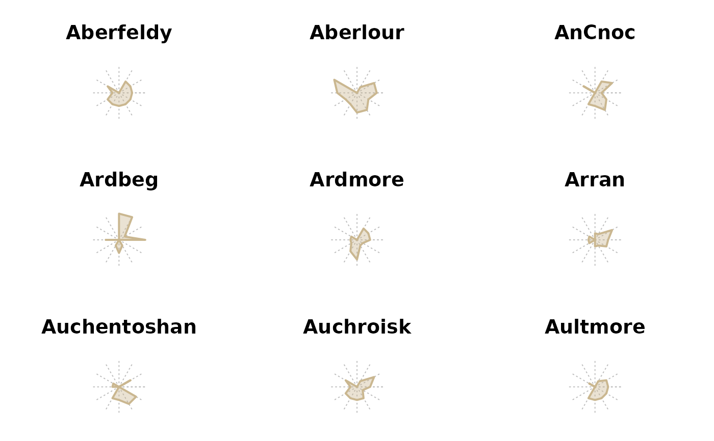
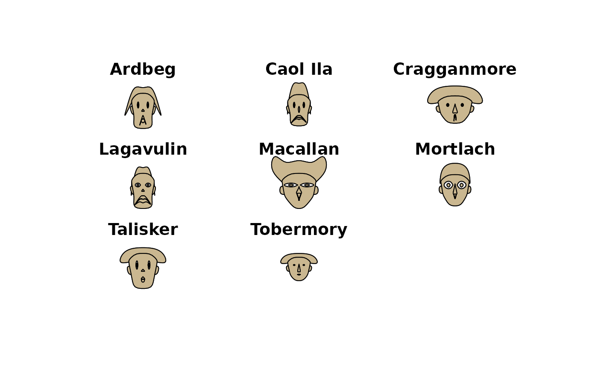

d.whisky.Rd86 malt whiskies are scored between 0-4 for 12 different taste categories including sweetness, smoky, nutty etc. Additionally, coordinates of distilleries allow us to obtain pairwise distance information. Using a combination of these variables it is possible to look for correlations between particular attributes of taste and physical location, for example does a shared local resource have a significant effect on nearby whiskies.
By using correlation analysis it may be possible to provide whisky recommendations based upon an individual's particular preferences.
By computing the Pearson correlation coefficient and specifying a threshold value between 0 and 1, we can establish an adjacency matrix where each node is a malt whisky and an edge represents a level of similarity above the threshold.
data("d.whisky")A data frame with 86 observations on the following 16 variables.
distillerya character Aberfeldy, Aberlour, AnCnoc, Ardbeg, ...
branda grouping factor to separate the better known distilleries (A) from the lesser known ones (B).
regiona factor with levels campbeltown, highland, islands, islay, lowland, speyside.
bodya numeric vector
sweetnessa numeric vector
smokya numeric vector
medicinala numeric vector
tobaccoa numeric vector
honeya numeric vector
spicya numeric vector
wineya numeric vector
nuttya numeric vector
maltya numeric vector
fruitya numeric vector
florala numeric vector
postcodea character AB30 1YE, AB35 5TB, ...
latitudea numeric vector, coordinate pairs of distilleries.
longitudea numeric vector, coordinate pairs of distilleries.
http://www.mathstat.strath.ac.uk/outreach/nessie/nessie_whisky.html
http://www.mathstat.strath.ac.uk/outreach/nessie/index.html
head(d.whisky)
#> distillery brand region body sweetness smoky medicinal tobacco honey spicy
#> 1 Aberfeldy A highland 2 2 2 0 0 2 1
#> 2 Aberlour A speyside 3 3 1 0 0 4 3
#> 3 AnCnoc A highland 1 3 2 0 0 2 0
#> 4 Ardbeg A islay 4 1 4 4 0 0 2
#> 5 Ardmore B highland 2 2 2 0 0 1 1
#> 6 Arran A islands 2 3 1 1 0 1 1
#> winey nutty malty fruity floral postcode latitude longitude
#> 1 2 2 2 2 2 PH15 2EB 286580 749680
#> 2 2 2 3 3 2 AB38 9PJ 326340 842570
#> 3 0 2 2 3 2 AB5 5LI 352960 839320
#> 4 0 1 2 1 0 PA42 7EB 141560 646220
#> 5 1 2 3 1 1 AB54 4NH 355350 829140
#> 6 1 0 1 1 2 KA27 8HJ 194050 649950
opar <- par(mfrow=c(3,3), cex.main=1.8)
for(i in 1:9)
PlotPolar(d.whisky[i, 4:15], rlim=4, type="l", col=DescTools::hecru,
lwd=2, fill=SetAlpha(DescTools::hecru, 0.4),
panel.first=PolarGrid(
ntheta=ncol(d.whisky[i, 2:13]), nr = NA, col="grey",
lty="dotted", las=1, cex=1.4, alabels=StrCap(colnames(d.whisky[i, 3:14])),
lblradians=TRUE),
main=d.whisky[i, "distillery"])

par(mfrow=c(3,3), cex.main=1.8, xpd=NA)
id <- d.whisky$distillery %in% c("Ardbeg","Caol Ila","Cragganmore","Lagavulin","Laphroig",
"Macallan","Mortlach","Talisker","Tobermory")
PlotFaces(d.whisky[id, 4:15], nr=3, nc=3, col=hecru, scale=TRUE, fill=TRUE,
labels=d.whisky$distillery[id])

par(opar)